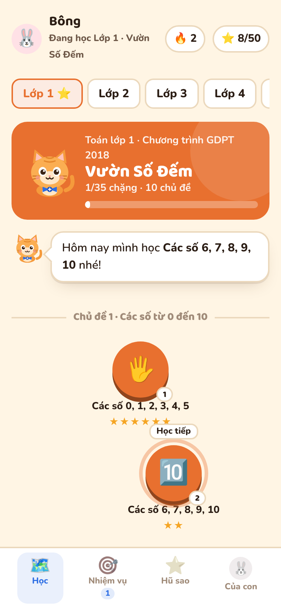
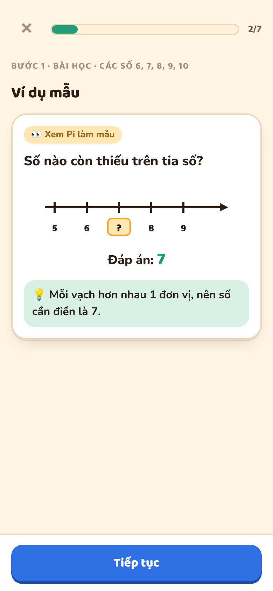
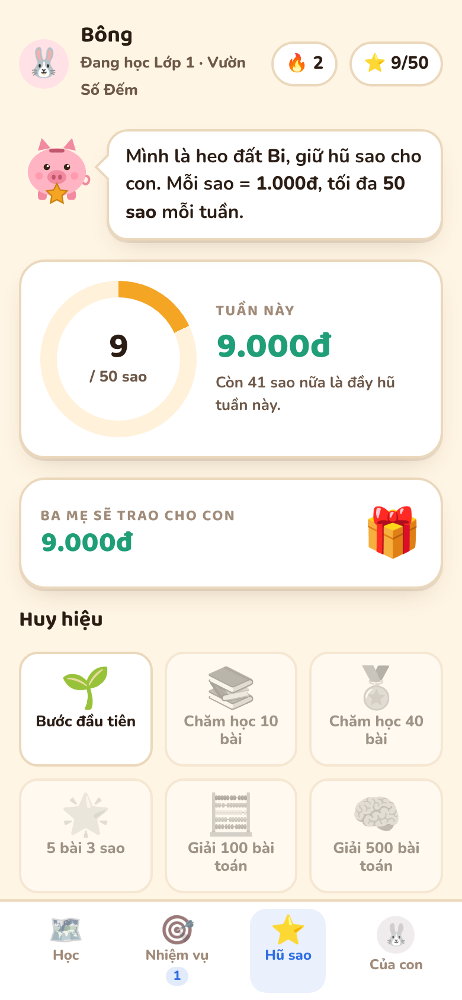
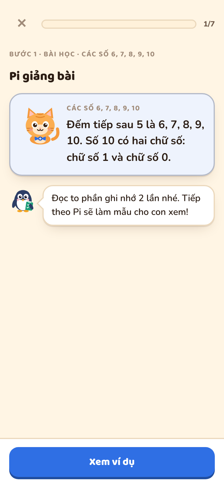
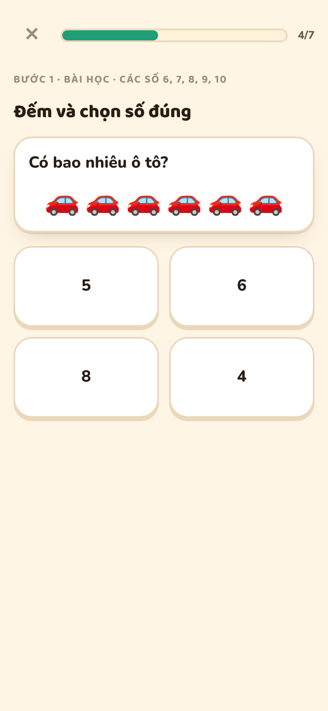
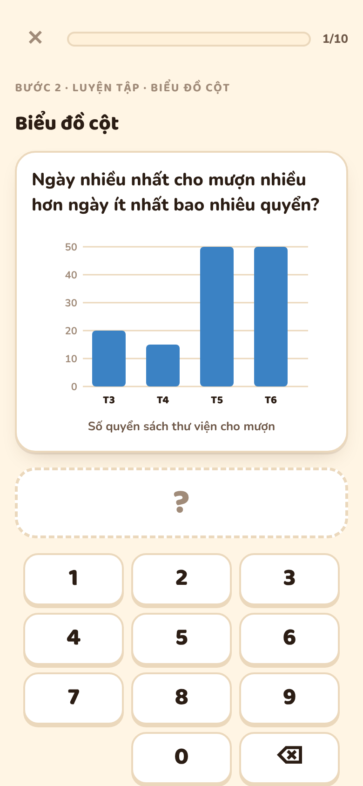
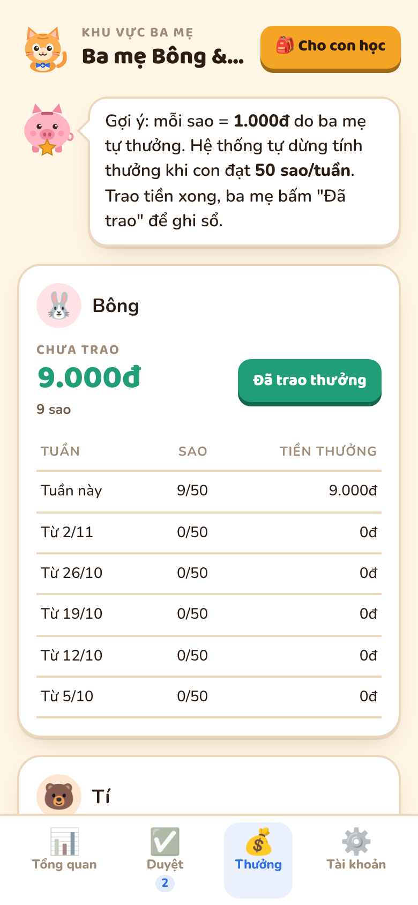
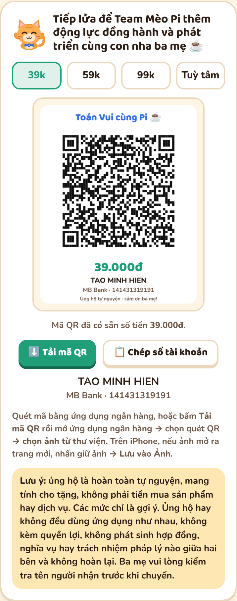

mhtiny3ds-a11y.github.io/maths-easy
Toán Vui cùng Pi là ứng dụng web giúp các con lớp 1 đến lớp 5 ôn luyện Toán đều đặn mỗi ngày. Lộ trình được sắp xếp theo các mạch kiến thức của Chương trình môn Toán tiểu học (GDPT 2018): từ đếm số, cộng trừ, bảng cửu chương, đến phân số, số thập phân, tỉ số phần trăm, thể tích và vận tốc.
Con học cùng ba người bạn dễ thương, làm nhiệm vụ thật cùng ba mẹ, và nhận sao thưởng để có thêm động lực. Ba mẹ theo dõi tiến độ, duyệt nhiệm vụ và tự quyết định cách thưởng cho con.



| Lớp | Quy mô | Nội dung chính |
|---|---|---|
| Lớp 1 Vườn Số Đếm | 8 chủ đề 25 bài | Các số đến 10 và đến 100, so sánh, hình phẳng, hình khối, cộng trừ trong phạm vi 10 và 100 (không nhớ), đo độ dài xăng-ti-mét, xem giờ đúng, các ngày trong tuần. |
| Lớp 2 Làng Phép Tính | 12 chủ đề 44 bài | Cộng trừ qua 10, có nhớ trong phạm vi 100 và 1000, ki-lô-gam, lít, đường gấp khúc, ngày giờ, phép nhân, phép chia (bảng 2, 5), số có ba chữ số, mét, ki-lô-mét, tiền Việt Nam, biểu đồ tranh. |
| Lớp 3 Phố Cửu Chương | 14 chủ đề 52 bài | Bảng nhân chia 2–9, một phần mấy, hình tròn, góc vuông, chia có dư, biểu thức, mi-li-mét, gam, mi-li-lít, nhiệt độ, số đến 100 000, làm tròn, số La Mã, chu vi, diện tích, xem đồng hồ. |
| Lớp 4 Thành Phố Phân Số | 11 chủ đề 45 bài | Số chẵn lẻ, biểu thức chứa chữ, đo góc, số có nhiều chữ số, yến tạ tấn, mét vuông, thế kỉ, tổng và hiệu, vuông góc, song song, nhân chia với số có hai chữ số, biểu đồ cột, phân số và 4 phép tính phân số. |
| Lớp 5 Đảo Thập Phân | 10 chủ đề 40 bài | Hỗn số, số thập phân và các phép tính, ki-lô-mét vuông, héc-ta, diện tích tam giác, hình thang, hình tròn, tỉ số phần trăm, tỉ lệ bản đồ, thể tích, hình hộp, hình lập phương, vận tốc, biểu đồ hình quạt. |
Con được chọn học bất kỳ lớp nào, kể cả ôn lại lớp dưới. Mỗi lớp còn có Ôn tập học kì 1 và Ôn tập cuối năm.

Toán Vui cùng Pi được làm ra để ba mẹ và con cùng học, không phải để con ngồi một mình với màn hình.
Con học Toán vui nhất là khi có ba mẹ bên cạnh. 💛
Xem chi tiết trong tài liệu Hướng dẫn sử dụng.
Ứng dụng miễn phí hoàn toàn: không quảng cáo, không mua bán trong ứng dụng, không thu phí. Nếu ba mẹ thấy ứng dụng hữu ích, có thể “tiếp lửa để Team Mèo Pi thêm động lực đồng hành và phát triển cùng con” ☕ với các mức gợi ý 39k, 59k, 99k hoặc tuỳ tâm, qua mã QR trong khu vực ba mẹ. Có nút Tải mã QR để ba mẹ lưu ảnh và mở trong ứng dụng ngân hàng.
